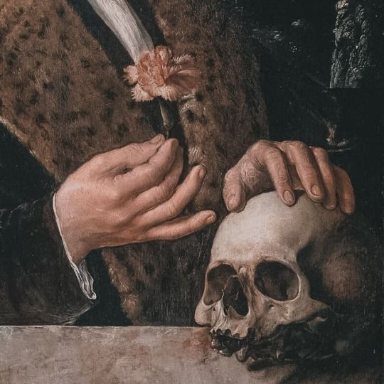

Welcome!
Welcome to my portfolio! I've added two new pages and links at the footer to enhance the navigation as well as a fun creepster font to give my page a fun vampire-y vibe at the title of each page.
An introduction of this site is a little short as I'm not very good at explaining for now until I really develope the page. This is a work-in-progress portfolio that shows off my projects during my school years at ISU. This site also serves as showing off my current web design skills! Each tab will eventually have a page filled with my projects from school along with personal projects through my time updating this site. At the moment, the only other page that is designed and has some actually informational text, plus some filler gibirish, is the About Me and Audio Design pages which you can acsess on the left side by clicking the ABOUT ME or AUDIO DESIGNS box! On the footer of this main page you can also find a link to my two socials!
I am hoping that this site will show off my ability to create websites and will improve even after school. I'm going to thoroughly update it through my class and throughout the years of working on websites, implementing new and old codes and formats!
Currently All pages work and while they may be a little skim on showing off projects and socials I have, I'm hoping that with time they will grow to have more pleasing and attention-grabbing content!